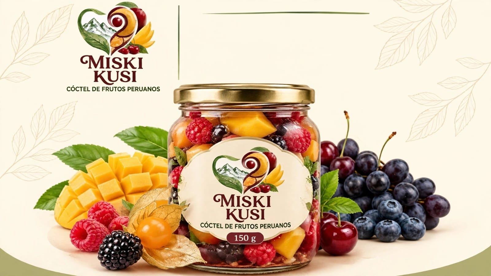

Andes · 2 500 msnm
Aguaymanto
Pequeña baya dorada envuelta en un cáliz de papel. Aporta acidez cítrica y notas tropicales.
Ácido · floral · tropical
Ein fruchtiger Cocktail aus sechs Früchten aus Peru, vereint mit dem besonderen Geschmack von Sachamango-Sirup. Eine kleine Reise von den Anden bis nach Berlin.
.jpg)




MISKI KUSI nace del encuentro entre la tradición frutícola peruana y el deseo de compartirla con el mundo. Cada frasco reúne seis frutas seleccionadas de los valles andinos, pasteurizadas con cuidado y bañadas en un almíbar artesanal de sachamango.
Llevar la riqueza frutícola del Perú a mesas europeas con trazabilidad total.
Ser el referente de conservas peruanas premium en el mercado alemán.
Cada fruta aporta color, aroma y una historia distinta al ensamblaje de MISKI KUSI.
Pequeña baya dorada envuelta en un cáliz de papel. Aporta acidez cítrica y notas tropicales.
Cactus columnar andino. Su pulpa es refrescante, con un dulzor suave y notas de pera.
Fruto del cactus andino con intenso color rojo-púrpura. Aporta cuerpo y notas a frutos rojos.
Pequeña, aromática y con una acidez equilibrada que da frescura al conjunto.
Notas profundas y maduras, con taninos suaves que estructuran el cóctel.

Dulzor envolvente con notas de miel y flores, base aromática del almíbar.
El sachamango (Gustavia macarenensis) es un fruto amazónico de pulpa aromática y dulzor único. Nuestro almíbar lo conserva en su punto justo para bañar cada fruta del cóctel.
Producto pasteurizado · Sin colorantes ni conservantes artificiales.
Un proceso cuidadoso en cuatro etapas para preservar sabor, color y textura.
Selección manual en fincas de Junín y Ayacucho en el punto óptimo de madurez.
Lavado con agua potable y corte controlado para mantener la integridad de cada fruta.
Tratamiento térmico suave que garantiza inocuidad sin perder frescura.
Llenado en caliente en frascos de vidrio de 150 g, sellado y etiquetado.
Del productor al consumidor final, cada lote es rastreable paso a paso.
Fincas asociadas en Junín y Ayacucho.
Código único por cosecha y fecha.
Registro de temperaturas y tiempos.
Fecha, operador y control de sellado.
Documentación sanitaria y aduanera.
QR en etiqueta para consultar origen.
Sistema alineado a los requisitos de trazabilidad de la UE (Reg. 178/2002).
Un corredor logístico diseñado para preservar la cadena de frío y la calidad.

Junín · Ayacucho · Lima

Callao · salida marítima

Hamburgo · aduana

Berlín · tiendas gourmet

Mesas europeas

Trabajamos con comunidades productoras bajo comercio justo, minimizando el impacto ambiental en cada etapa.
Escríbenos para conocer disponibilidad, muestras o distribución en Alemania.
También puedes escribir a hola@miskikusi.com